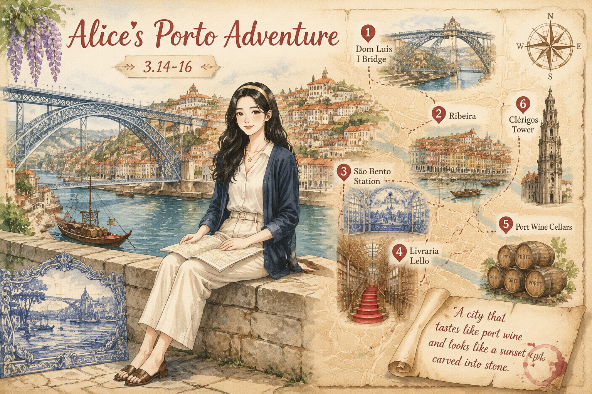
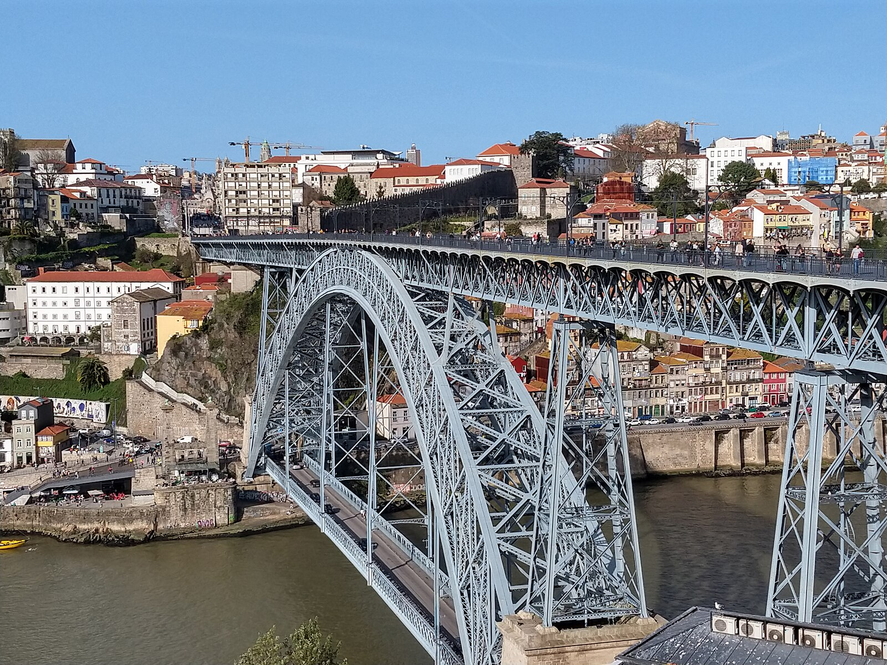
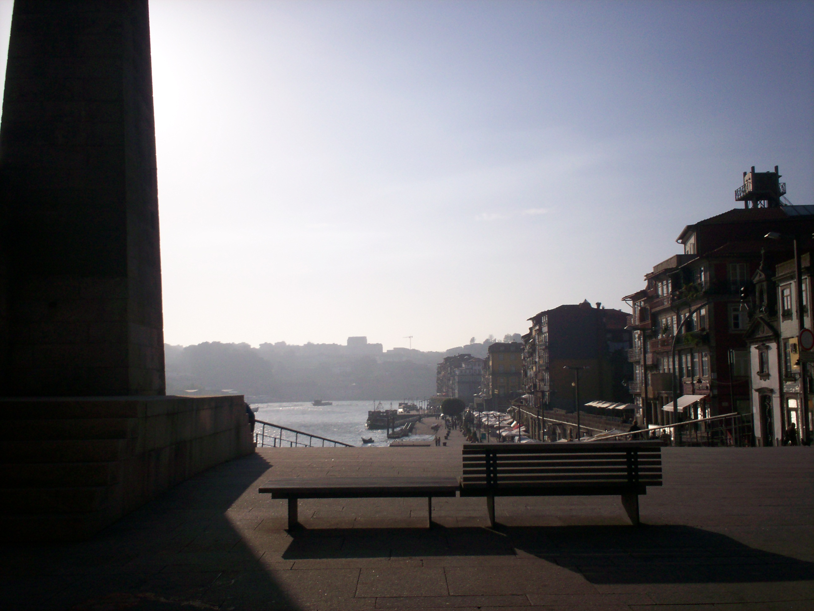
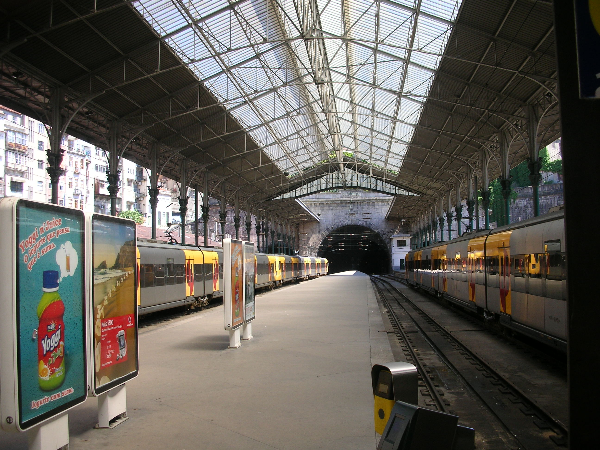

波尔图Porto
World-1000 · 杜罗河畔的一页慢生活
World-1000 · 杜罗河畔的一页慢生活

河岸山城，慢节奏但故事感很强。
公元前已有凯尔特人定居，罗马人在此建港，中世纪因港口贸易繁荣。18 世纪波特酒贸易让英国酒商大量涌入，老城沿杜罗河生长成今天的模样。1996 年里贝拉被联合国教科文组织列为世界文化遗产。
波尔图的颜色来自橙色屋顶、蓝白瓷砖和杜罗河水的反光。老城不是平的，街道像台阶一样上下交错，转角常藏着一面瓷砖墙或一家小酒馆。
傍晚坐在河边，看桥上的灯一盏盏亮起来，水面把颜色揉碎成金色波纹。
Port 葡萄酒其实以城市命名，而非相反。酒窖在河对岸的加亚新城，英国人把这里变成甜酒贸易中心。
本地三明治 Francesinha 层层堆叠肉、香肠和奶酪，浇上啤酒番茄酱，号称“小女孩”却极扎实。
今天波尔图的阳光是温的，不像南欧其他城市那样急着把人晒透。我坐在杜罗河边的石墙上，腿悬空晃着，看河水把两岸的橙色屋顶一一倒映过去。对岸的酒窖飘来淡淡的橡木桶气味，混着河边咖啡香。
一位卖艺人拉起手风琴，旋律顺着石阶往下滚。我没听懂歌词，但几个当地人跟着哼，其中一位老爷爷还端起咖啡杯向我举了举。我笑着回敬，像他一样慢慢喝。
傍晚爬教士塔时，风把头发吹到脑后。满城屋顶在夕阳里变成蜜糖色，大桥的轮廓像一条生锈的项链横在河上。我翻开地图，用笔把今天去过的地方圈了出来。波尔图不用赶，它自己会把故事讲给你听。
在波尔图，最好的行程就是不要排得太满。


